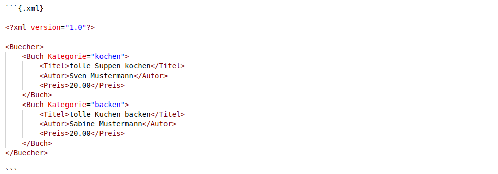
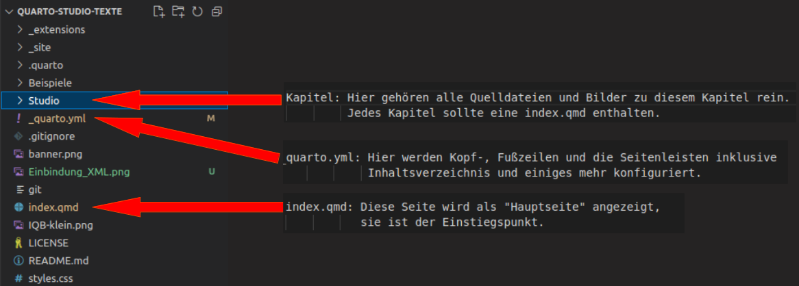

Schulung Quarto, Git und MVSC
Git
Git ist eine Versionsverwaltung für Dateien. Es wird überlicherweise von Softwareentwickler*innen verwendet, um gemeinsam an Softwareprojekten zu arbeiten und Änderungen verfolgen zu können. test
Hier mal der Link zu Git.
Nach der Installation auf einem PC, kann mit Hilfe von Git-Befehlen eine Versionskontrolle lokaler Dateien erfolgen. Es gibt sehr viele mögliche Befehle. Hier mal die wichtigsten Befehle auf einen Blick.
Einen guten und leicht verständlichen Einblick bietet auch diese Seite.
Was ist Git-Hub?
Git-Hub ist eine Plattform, die Git zur Versionsverwaltung nutzt und zusätzliche Funktionen bietet, wie bspw. Cloud-Speicher, Dokumentation, Werkzeuge zum kollaborativen Arbeiten und vieles, vieles mehr. Als Gegenstück zu Git-Hub sei an dieser Stelle mal Git-Lab genannt.
In Git-Hub kann man nach Anmeldung ein Repository erzeugen. Dieses Repo enthält dann alle Dateien, die einer Versionskontrolle unterliegen sollen. Das Repo kann lokal auf einen PC gespiegelt werden (clonen). Änderungen können dann lokal erfolgen und auf Wunsch wieder in das Repo hochgeladen werden. Hierfür werden die Git-Befehle genutzt. Auf diese Weise können mehrere Personen Änderungen an den Dateien eines Repos erzeugen und somit gemeinsam die Code-Entwicklung vorantreiben.
Git-Hub bietet auch die Funktion eine Webseite zu hosten. Das wird später im Zusammenhang mit Quarto noch wichtig.
Microsoft Visual Studio Code (MVSC)
MVSC ist eine kostenfreie Entwicklungsumgebung (IDE) für die Entwicklung von Software. MVSC stellt hierfür eine Reihe von Programmierwerkzeugen zur Verfügung und unterstützt alle gängigen Programmiersprachen und die Versionsverwaltung mittels Git. MVSC kann um viele weitere Funktionen erweitert werden. Hier mal der Link zu MVSC. Es gibt viele weitere IDE’s, diese Schulung bezieht sich allerdings auf MVSC.
Quarto
Quarto ist ein umfangreiches Werkzeug für die Erstellung wissenschaftlicher Dokumentationen. Auf Grundlage von speziellen Quarto-Dateien (.qmd) und Konfigurationsdateien (.yml, .json etc.) können kompakte Webseiten, PDF- oder Word-Dateien erzeugt werden (rendern).
Hier der Link zur Quarto Dokumentation.
Wie nutzen wir Quarto für die TBA-Doku?
Quarto erzeugt in unserem Fall eine Website, also Html-Dateien. Diese Webseite hosten wir auf Git-Hub mit Hilfe der kostenfreien Funktion: Git-Hub Pages. Alle Dateien von Quarto, die zur Erzeugung der Webseite benötigt werden, befinden sich in dem folgenden Git-Hub Repository.
Die daraus erzeugte Webseite ist hier zu sehen.
Wie werden Quarto Inhalte bearbeitet?
Das oben genannte Repo wird mit Hilfe des Befehls: git clone https://github.com/iqb-berlin/Quarto-Studio-Texte.git auf den lokalen PC kopiert, mit MVSC geöffnet und bearbeitet. Jede Änderung wird in MVSC mit Hilfe der integrierten Git-Funktion angezeigt und kann bei Bedarf mit den Git-Befehlen in das Remote-Repo geladen werden. Die gleichzeitige Bearbeitung einer Datei von mehreren Personen kann zu Konflikten führen, die dann mühselig behoben werden müssen. Daher sollten im Vorfeld Absprachen getroffen werden, wer an welcher Datei arbeitet. Ist eine gemeinsame Bearbeitung einer Datei gewünscht, sollte folgendes beachtet werden:
- Nach dem Öffnen des lokalen Repos sollte zuerst der Befehl: git pull abgesetzt werden. Das stellt sicher, dass alle lokalen Dateien auf dem aktuellen Stand sind.
- Es sollte in der Git-Konfiguration die Möglichkeit eines Rebases festgelegt werden. Dies geschieht mit dem Befehl: git config pull.rebase true. Wird beim Laden lokaler Änderungen in das Remote-Repo ein Konflikt angezeigt, wird nun zur Konfliktlösung gleich ein Merge-Editor in MVSC angeboten. Anschließend kann die Änderung mit git commit -m “commit message” in das Remote Repo geladen werden.
Wie müssen die Quelldateien (.qmd) aufgebaut sein?
Die Dateien mit der Endung .qmd enthalten die Inhalte, die später in HTML übersetzt werden. Damit der Quarto Interpreter die Inhalte übersetzen kann, müssen diese in der Auszeichnungssprache Markdown vorliegen.
Mehr zu Markdown ist hier zu lesen.
Es können weitere Inhalte, die nicht in Markdown verfasst sind, eingebunden werden. Solche Inhalte müssen speziell deklariert werden, damit der Quarto Interpreter diese erkennt und übersetzen kann. Die Einleitung erfolgt mit 3 Hochkommata und einem entsprechenden Bezeichner. Nachfolgend mal ein Beispiel für die Einbindung von XML-Code:

Übersetzt in HTML sieht das dann so aus:
<Buecher>
<Buch Kategorie="kochen">
<Titel>tolle Suppen kochen</Titel>
<Autor>Sven Mustermann</Autor>
<Preis>20.00</Preis>
</Buch>
<Buch Kategorie="backen">
<Titel>tolle Kuchen backen</Titel>
<Autor>Sabine Mustermann</Autor>
<Preis>20.00</Preis>
</Buch>
</Buecher>Mehr zum Thema könnt ihr dem Quarto-Guide entnehmen.
Wie ist Quarto aufgebaut?
Hier mal das Wesentliche für euch:
